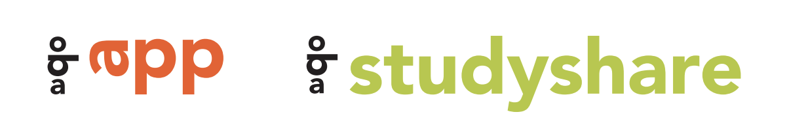

Oba maakt veel gebruik van banners met een ratio van 16:5. Deze afbeeldingen worden als background-image gebruikt. Verder hebben bijna alle afbeeldingen een ratio van 4:3.


Oba maakt veel gebruik van banners met een ratio van 16:5. Deze afbeeldingen worden als background-image gebruikt. Verder hebben bijna alle afbeeldingen een ratio van 4:3.
Voor oba corporate wordt het basislogo gebruikt. Hoofdkleur is rood. Om een kleurig palet te krijgen wordt zwart niet meer als tweede kleur gebruikt, maar zijn er vier voorkeurskleuren uitgekozen. Uitingen zijn bij voorkeur tweetalig (Nederlands en Engels).
